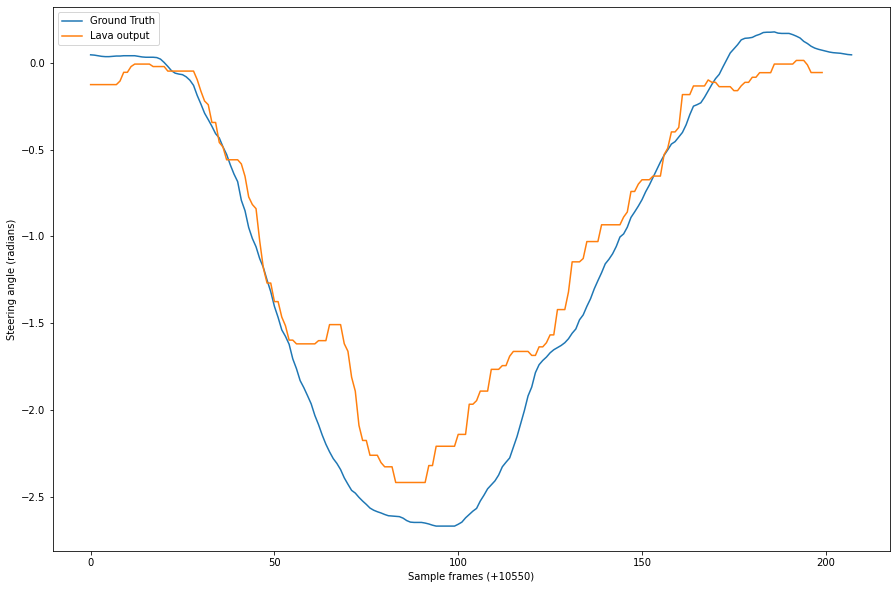

PilotNet SDNN Example
Network excange module is available as lava.lib.dl.netx.{hdf5, blocks, utils}. * hdf5 implements automatic network generation. * blocks implements individual layer blocks. * utils implements hdf5 reading utilities.
[1]:
import numpy as np
import matplotlib.pyplot as plt
from PIL import Image
from lava.magma.core.run_configs import Loihi1SimCfg
from lava.magma.core.run_conditions import RunSteps
from lava.proc import io
from lava.lib.dl import netx
from dataset import PilotNetDataset
Create network block
A network block can be created by simply instantiating netx.hdf5.Network with the path of the desired hdf5 network description file. * The input layer is accessible as net.in_layer. * The output layer is accessible as net.out_layer. * All the constituent layers are accessible as as a list: net.layers.
[2]:
net = netx.hdf5.Network(net_config='network.net')
print(net)
| Type | W | H | C | ker | str | pad | dil | grp |delay|
|Input | 100| 33| 3| | | | | |False|
|Conv | 49| 16| 24| 3, 3| 2, 2| 0, 0| 1, 1| 1|False|
|Conv | 24| 7| 36| 3, 3| 2, 2| 0, 0| 1, 1| 1|False|
|Conv | 22| 4| 64| 3, 3| 1, 2| 0, 1| 1, 1| 1|False|
|Conv | 20| 2| 64| 3, 3| 1, 1| 0, 0| 1, 1| 1|False|
|Dense | 1| 1| 100| | | | | |False|
|Dense | 1| 1| 50| | | | | |False|
|Dense | 1| 1| 10| | | | | |False|
|Dense | 1| 1| 1| | | | | |False|
[3]:
print(f'There are {len(net)} layers in network:')
for l in net.layers:
print(f'{l.__class__.__name__:5s} : {l.name:10s}, shape : {l.shape}')
There are 9 layers in network:
Input : Process_1 , shape : (100, 33, 3)
Conv : Process_3 , shape : (49, 16, 24)
Conv : Process_6 , shape : (24, 7, 36)
Conv : Process_9 , shape : (22, 4, 64)
Conv : Process_12, shape : (20, 2, 64)
Dense : Process_15, shape : (100,)
Dense : Process_18, shape : (50,)
Dense : Process_21, shape : (10,)
Dense : Process_24, shape : (1,)
[4]:
num_samples = 200
steps_per_sample = 1
num_steps = num_samples + len(net.layers)
Create Dataset instance
Typically the user would write it or provide it.
[5]:
full_set = PilotNetDataset(
path='../data',
size=[100, 33],
transform=net.in_layer.transform, # input transform
visualize=True, # visualize ensures the images are returned in sequence
sample_offset=10550,
)
train_set = PilotNetDataset(
path='../data',
size=[100, 33],
transform=net.in_layer.transform, # input transform
train=True,
)
test_set = PilotNetDataset(
path='../data',
size=[100, 33],
transform=net.in_layer.transform, # input transform
train=False,
)
Instantiate Dataloader
[6]:
dataloader = io.dataloader.SpikeDataloader(dataset=full_set)
Connect Input and Output
[7]:
gt_logger = io.sink.RingBuffer(shape=(1,), buffer=num_steps)
output_logger = io.sink.RingBuffer(shape=net.out_layer.shape, buffer=num_steps)
dataloader.ground_truth.connect(gt_logger.a_in)
dataloader.s_out.connect(net.in_layer.neuron.a_in)
net.out_layer.out.connect(output_logger.a_in)
Run
Customize Run Configuration
[8]:
class CustomRunConfig(Loihi1SimCfg):
def select(self, proc, proc_models):
# customize run config to always use float model for io.sink.RingBuffer
if isinstance(proc, io.sink.RingBuffer):
return io.sink.PyReceiveModelFloat
else:
return super().select(proc, proc_models)
Run the network
[9]:
run_config = CustomRunConfig(select_tag='fixed_pt')
net.run(condition=RunSteps(num_steps=num_steps), run_cfg=run_config)
output = output_logger.data.get().flatten()
gts = gt_logger.data.get().flatten()
net.stop()
Evaluate Results
[10]:
plt.figure(figsize=(15, 10))
plt.plot(np.array(gts[1:]), label='Ground Truth')
plt.plot(np.array(output[len(net.layers):]).flatten()/(1<<18), label='Lava output')
plt.xlabel(f'Sample frames (+10550)')
plt.ylabel('Steering angle (radians)')
plt.legend()
[10]:
<matplotlib.legend.Legend at 0x7fe8cb330280>
